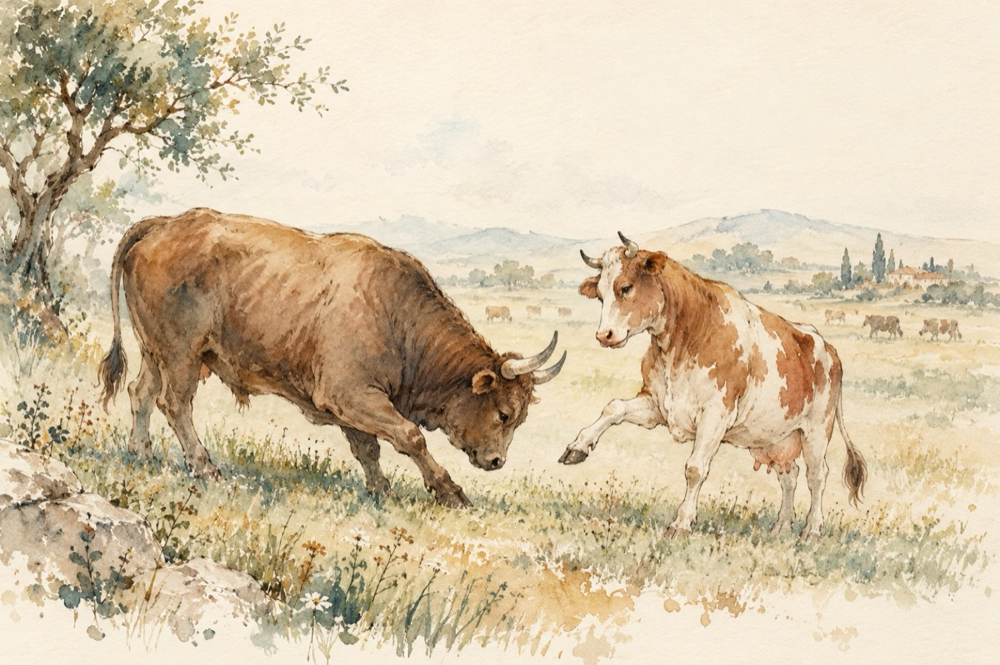

Boul și vaca
BOUL
–Bună, mă numesc BOIAN,
Sărut copita dumneavoastră
Sunt un veteran
Unde cireada zilnic vine pe imaș să pască!
Sunt al boilor de pretutindeni, un brav urmaș.
VACA
–Aș!... Nu cred că e nevoie să vă explicați
Un bou rămâne un bou, fie la sat sau la oraș
Nu poate fi un reprezentant de bază
Doar coarnele vă diferențează!
BOUL
–Stimată vacă după cum aud
Joiana vă strigă
Doar nu sunt surd!
Și cavalerismul din mine mă obligă
Frumos să vă tratez, să vă răspund
Printre boi e-adevărat mă număr
Cu coarne, cu necoarne, pot fi și ciut
Da, recunosc, e-un adevăr
Am vrut doar copita dvs. s-o sărut!
VACA
–Dacă e să ne luăm după anumite considerente, asa ceva
Boul tot bou rămâne
Amândoi nu putem schimba lumea
Nu că aș acuza al dvs. nume
Pe când o vacă e mult mai folositoare mai înțeleaptă
Și cine ar putea influența în bine lumea noastră!
Luând posibilitatea cea mai dreaptă.
BOUL
–Cu explicația de rigoare, de a nu fi o vacă încălțată
Nu e cazul dumneavoastră
Eu totuși sunt un bou și cred, de rasă
Reprezint această cireadă
Nu e vorba de o turmă de oi
Sunt purtător de cuvânt la boi!
VACA
–Sunt destui boi purtători de cuvânt
Și nu cred că sunteți o excepție
Pe acest pământ
Și nici o invenție!
BOUL
–Cuvintele dumneavoastră nu pot decât să mă aprindă
Flacăra imaginației mele de bou
Poate fără de izbândă
Ce vreau să vă spun nu e ceva nou!
Cu bunăvoința dumneavoastră
Aș dori să vă pun câteva întrebări
Dintr-o curiozitate firească
Fără prea mari supărări
Răspunsuri care ar limpezi această grosolănie
A cuvintelor adresate mie!
VACA
–Chiar nu mă deranjează
Numai să fiți la concret cu termenii
Să fie la zi, tot ce-n jur pulsează!
Să nu batem aiurea câmpii.
BOUL
–Nu credeți că această denumire de bou și vacă
Ne lipsesc de o anumită personalitate?
Neinițiații ar putea altceva să înțeleagă
Pe bună dreptate!
VACA
–Vaca-i vacă, bou-i bou
Dacă le luăm la modul figurat
Nu văd în această expresie ceva rău.
Tristețea pentru mata este că-n realitate e adevărat.
Dacă le luăm la valoare
Atunci e altă mâncare!
BOUL
–Vă simțiți totuși a vacă adevărată
Sau cumva puțin demodată!?
VACA
–O spun faptele,
Că mă deranjezi încornoratule!
Am în urma mea mai mulți viței,
Și-un râu întreg de lapte.
Dacă vrei relații mai multe despre mine
Poți merge la taurul comunal, e bine?
Să știi că nu-mi este rușine că mă numesc vacă
Faptele lasă totul să vorbească!
Pe când tu, îmi pare rău, nu ești decât un bou!
BOUL
–Încă odată îmi cer scuze
Dar dvs. sunteți o făcătoare de boi
Lucru care dă să mă amuze
Ce vină avem noi?
VACA
–S-avem pardon! Viței, ce-mi pasă
Treaba lor dacă rămân boi sau tauri de rasă!
Vasile Groza
Apare și în: D-ale lui Văsălie și Mărie.